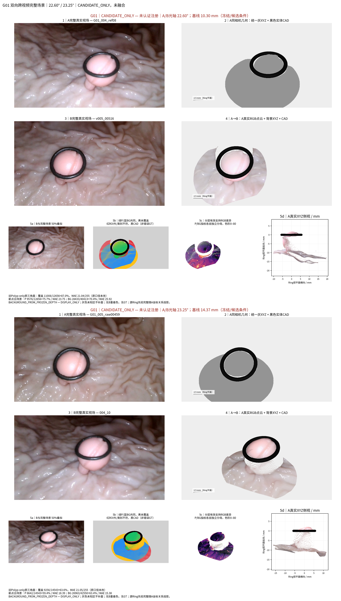
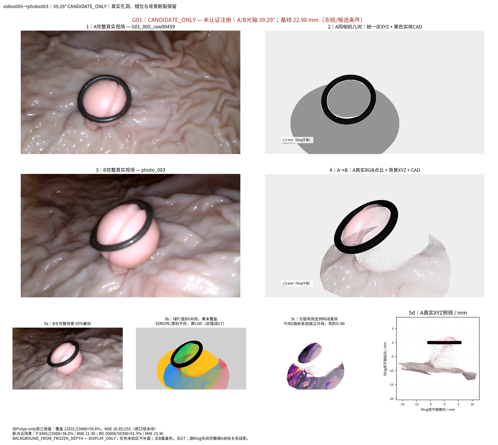
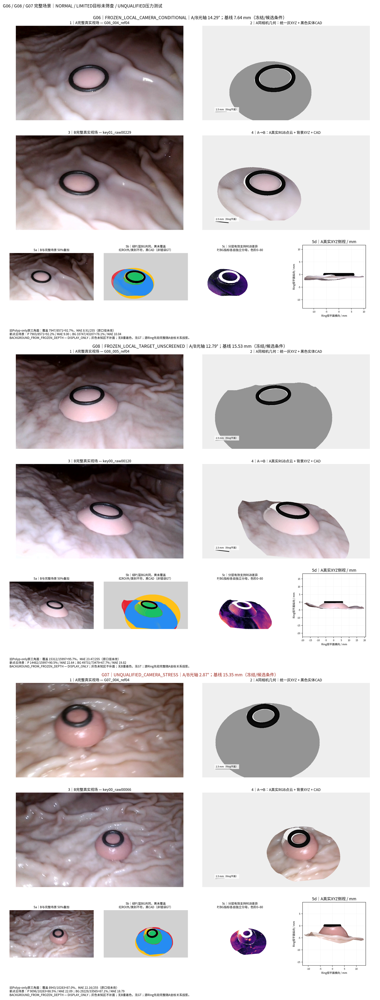
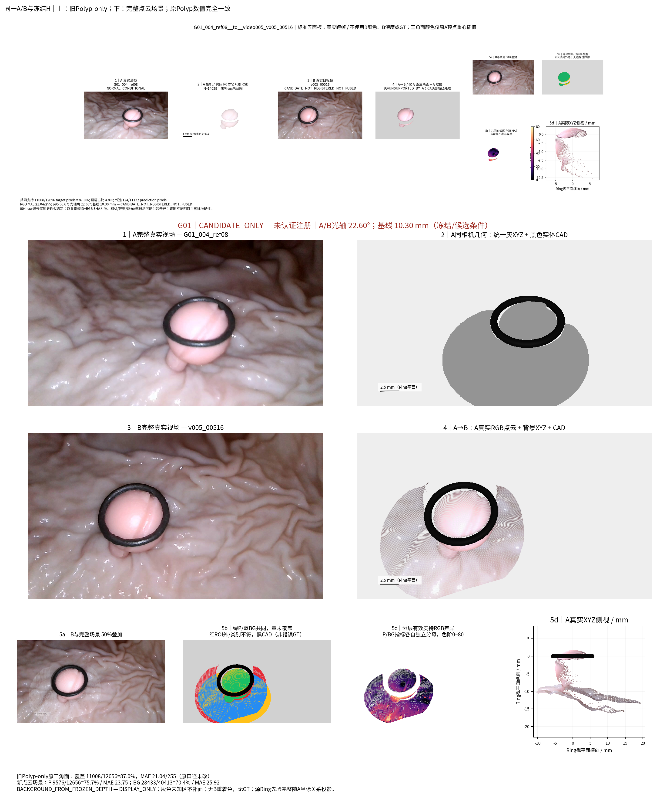

G01_005_raw00459__to__photo_003_LG490_candidate — 39.29° / 22.98 mm
CANDIDATE_PHOTO_K490_NOT_REGISTERED；BG DISPLAY_ONLY。高分辨率B与完整场景 | 实际XYZ侧/斜视与相机关系 | 实际分层XYZ/UV（本地）


Polyp + 黑色实体CAD Ring + 实际Background XYZ。背景DISPLAY_ONLY；跨源CANDIDATE；无新重建或精度改善声明。
CANDIDATE_PHOTO_K490_NOT_REGISTERED；BG DISPLAY_ONLY。高分辨率B与完整场景 | 实际XYZ侧/斜视与相机关系 | 实际分层XYZ/UV（本地）
FROZEN_LOCAL_CAMERA_CONDITIONAL；BG DISPLAY_ONLY。高分辨率B与完整场景 | 实际XYZ侧/斜视与相机关系 | 实际分层XYZ/UV（本地）

CANDIDATE_NOT_REGISTERED_NOT_FUSED；BG DISPLAY_ONLY。高分辨率B与完整场景 | 实际XYZ侧/斜视与相机关系 | 实际分层XYZ/UV（本地）

CANDIDATE_NOT_REGISTERED_NOT_FUSED；BG DISPLAY_ONLY。高分辨率B与完整场景 | 实际XYZ侧/斜视与相机关系 | 实际分层XYZ/UV（本地）

FROZEN_LOCAL_CAMERA_CONDITIONAL；BG DISPLAY_ONLY。高分辨率B与完整场景 | 实际XYZ侧/斜视与相机关系 | 实际分层XYZ/UV（本地）

FROZEN_LOCAL_CAMERA_CONDITIONAL；BG DISPLAY_ONLY。高分辨率B与完整场景 | 实际XYZ侧/斜视与相机关系 | 实际分层XYZ/UV（本地）

NORMAL_CONDITIONAL；BG DISPLAY_ONLY。高分辨率B与完整场景 | 实际XYZ侧/斜视与相机关系 | 实际分层XYZ/UV（本地）

FROZEN_LOCAL_TARGET_UNSCREENED；BG DISPLAY_ONLY。高分辨率B与完整场景 | 实际XYZ侧/斜视与相机关系 | 实际分层XYZ/UV（本地）

FROZEN_LOCAL_CAMERA_CONDITIONAL；BG DISPLAY_ONLY。高分辨率B与完整场景 | 实际XYZ侧/斜视与相机关系 | 实际分层XYZ/UV（本地）

FROZEN_LOCAL_TARGET_UNSCREENED；BG DISPLAY_ONLY。高分辨率B与完整场景 | 实际XYZ侧/斜视与相机关系 | 实际分层XYZ/UV（本地）

UNQUALIFIED_CAMERA_STRESS；BG DISPLAY_ONLY。高分辨率B与完整场景 | 实际XYZ侧/斜视与相机关系 | 实际分层XYZ/UV（本地）




